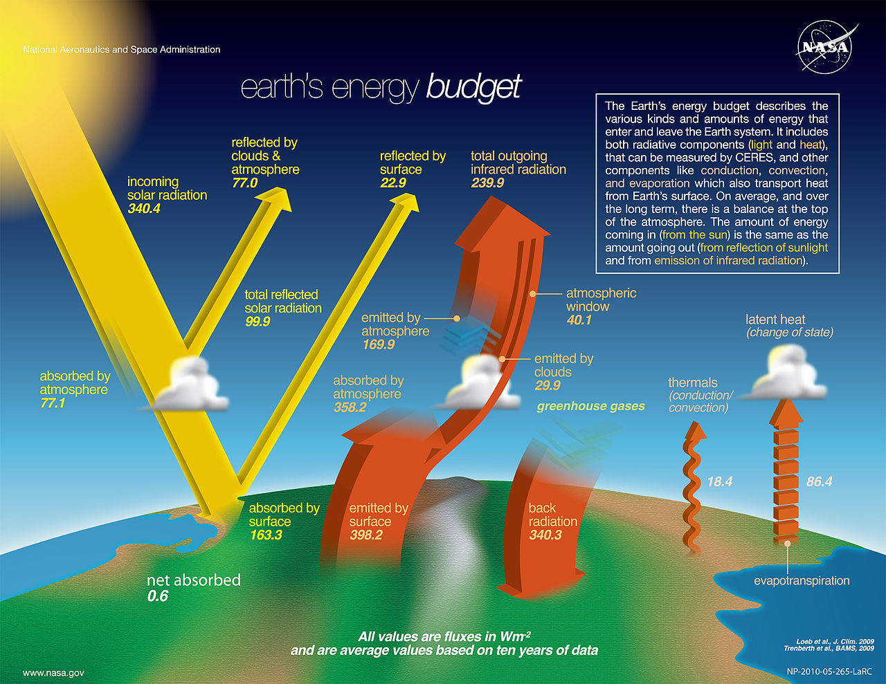

Global Energy Balance and Conservation Laws
Climate modeling is built on the foundation of Conservation Laws. In physics, we define modeling by tracking a quantity as it moves through a system: "What comes in, what goes out, and what moves it around."
While we could model mass (water, gases, minerals), energy is unique. Every component of the Earth system—oceans, atmosphere, ice—can be translated into an Energy Value, allowing for a unified balance sheet of the planet's state.
Climate models are only valid within specific scales. A model for a monsoon (months) looks very different from a model for silicate weathering (millions of years).
| Process | Time Scale | Drivers |
|---|---|---|
| Water Cycle | Weeks to Months | Evaporation, Precipitation |
| Biology ($CO_2$) | Seasonal | Deciduous growth cycles |
| Geology | $10^5+$ Years | Volcanism, Weathering |
To understand the Earth's climate, we must look at the quantitative breakdown of energy fluxes. The figure below illustrates the "Global Annual Average" of energy flowing into and out of the Earth system.

Figure: NASA Earth's Energy Budget. All values are in $W/m^2$. Source: nasa_energy_budget.jpg
The total solar input is $\approx 340.4\text{ W/m}^2$. However, about 29% ($\approx 100\text{ W/m}^2$) is immediately reflected back to space by clouds, the atmosphere, and the surface (Albedo).
The surface only absorbs $\approx 163\text{ W/m}^2$ of direct solar energy, yet it emits $\approx 398\text{ W/m}^2$ of thermal radiation. This is only possible because of the Greenhouse Effect.
The "extra" energy comes from Back Radiation ($\approx 340.3\text{ W/m}^2$). The atmosphere absorbs thermal energy emitted by the surface and re-radiates it in all directions—including back down. This recycling of energy allows the surface to reach a much warmer equilibrium temperature than solar input alone would permit.
The surface also sheds energy via fluid dynamics:
A Zero-Dimensional (0D) Model treats the entire planet as a single point with one temperature $T$.
On the Moon, every point acts as its own independent 0D system because there is no atmosphere to transport heat ($T_{day} \approx 400\text{K}$, $T_{night} \approx 100\text{K}$).
On Earth, the atmosphere and ocean transport massive amounts of energy, making a single global temperature a poor representation of local climates.
Earth is an energy engine moving heat from the equator (surplus) to the poles (deficit). To model this, we move toward Multi-Box Models:
The efficiency of this transport depends on planetary rotation. High rotation (Earth) hinders transport via Coriolis forces, creating large gradients. Slow rotation allows for more efficient transport and more uniform temperatures.